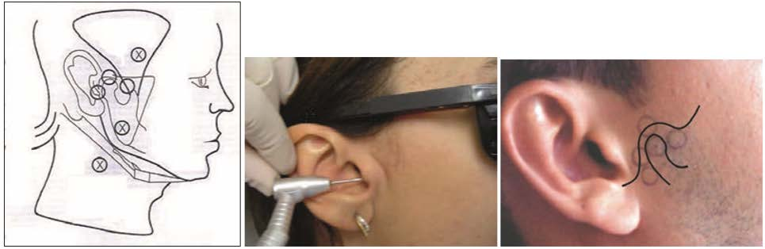
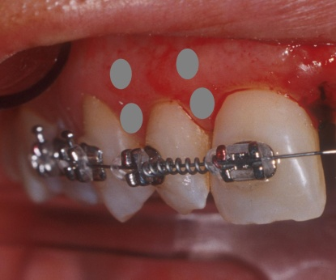

Os protocolos e a metodologia clínica para cada tipo de enfermidade ou situação clínica são sugeridos baseados no levantamento de relatos científicos da experiência clínica ao longo de 08 anos (2011-2018).
4.1 – Métodos de irradiação
O laser pode ser entregue de forma puntual ou pontual (pontos eqüidistantes cobrindo a área da lesão ou o ponto-alvo) ou por varredura (laser varre toda a extensão da lesão). Além disso, o laser pode ser aplicado localmente, atingindo diretamente a área traumatizada ou a lesão, ou pode ser aplicado à distância da lesão em pontos pré-determinados, tais como os gatilho e os linfonodos. Dessa forma, quatro são os métodos de irradiação aqui sugeridos:
1.1 – Puntual e local;
1.2 – Puntual e nos pontos-gatilho (“trigger-points”);
1.3 – Puntual e sobre os linfonodos (drenagem linfática); e,
1.4 – Varredura e local.
4.1.1 – Puntual e local
O cálculo da enregia da dose ou fluência é realizado utilizando-se a área da ponta ativa do laser. O local de irradiação coincide com o local do trauma ou enfermidade. Na presença de infecção, como por exemplo, herpes simples labial na fase bolhosa ou mesmo úlcera aftosa recorrente, é importante evitar a irradiação do centro da lesão para não estimular a proliferação dos microrganismos, portanto irradia-se somente pontos ao redor da lesão.
Em casos de úlceras sem presença de infecção, é importante diminuir a energia ou dose de irradiação no centro da lesão, ou seja, se ao redor a energia ou dose indicada forem de 133 J/cm² / 4,0J respectivamente por ponto, no centro e mesmo em toda a porção interna da lesão, a energia ou dose deve ser a metade ou 1/3 dessa, ou seja, entre 66 J/cm² /2,0J por ponto respectivamente (figura 13).
Figura 13 – Método de irradiação de úlcera sem presença de infecção, segundo BAXTER (1994).
4.1.2 – Puntual e nos pontos-gatilho (“trigger-points”)
Nesse caso, também para o cálculo da dose ou fluência será a área da ponta ativa do
laser a utilizada na fórmula.
Os pontos-gatilho ou “trigger-points” são aqueles que desencadeiam o processo doloroso. Trata-se de zonas musculares (feixes musculares) de particular sensibilidade e projeção mais alta, revelando um ponto focal da dor devido condições isquêmicas. Os pontos-gatilho podem aparecer individualmente ou podem formar uma cadeia-gatilho. Esses pontos são resultantes tanto de fenômenos neuro-vegetativos, sensoriais ou motores, quanto devido a traumas.
Para localizar esses pontos, é necessário fazer uma palpação (figura 14) na qual o paciente colabora confirmando se se trata do ponto correto.
Figura 14 – Como detectar os pontos-gatilho (LASERS – 2000).
4.1.3 – Puntual e sobre os linfonodos (drenagem linfática)
Também aqui a dose é calculada da mesma forma, utilizando a área da ponta ativa.
A irradiação é realizada sobre os gânglios linfáticos ou atualmente denominados infonodos, que estiverem relacionadas a lesão a ser tratada.
Essa é uma técnica desenvolvida pela Profa Luciana Almeida-Lopes (2002) e que tem promovido uma aceleração nos processos de inflamação com ou sem presença de infecção. A drenagem linfática é uma técnica de tratamento pouco utilizada na odontologia, mas é grande sua indicação em processos inflamatórios, uma vez que em processos infecciosos agudos (como pericoronarites, abscessos endodônticos, alveolites e herpes), pode-se utilizar o laser terapêutico atuando diretamente na drenagem da região, evitando-se a irradiação direta da lesão.
Os linfonodos são órgãos linfóides secundários (VERLAG - 2001) (figura 15). São constituídos por conglomerados mistos de linfócitos T e B, localizados em regiões distintas e oriundas da proliferação de linfócitos. São formados pela cortical externa e medular interna. A cortical contém os folículos linfóides com seus centros germinativos e a medula é composta de fileiras de células linfáticas (os cordões medulares). Além de células dos linfonodos, contem macrófagos, mais numerosos na medular. Os linfócitos B (relacionados com a imunidade humoral) encontram-se principalmente nos folículos corticais, ao passo que os linfócitos T (relacionados com a imunidade celular) alojam-se nas áreas paracorticais e medular MICHALANY - 1995).
A técnica descrita por ALMEIDA-LOPES (2002) visa ativar a drenagem linfática de uma região onde está estabelecido um quadro inflamatório. Essa ativação é feita com o laser terapêutico, cuja ponteira é colocada diretamente sobre os linfonodos responsáveis pela drenagem da região acometida, com a finalidade de estimulá-los diretamente. Utiliza-se um laser infravermelho e a ponteira é colocada sobre os linfonodos responsáveis pela drenagem da região acometida. Aplica-se a energia ou dose cerca de 4J/133 J/cm² respectivamente. em cada linfonodo. O número de sessões varia de 2 a 6, com intervalo de dois dias entre as sessões. O número de sessões varia segundo o tempo que varia a solução do quadro inflamatório.
A vantagem dessa técnica aqui preconizada e descrita evita ativar o microorganismo que infecta o local da lesão, no caso de lesões altamente contaminadas (como o herpes em fase de vesicular), lesões apicais agudas ou purulentas (quadros de pericoronarites ou alveolites). Essa técnica visa ativar a imunidade local do paciente, ativando a drenagem da região, fazendo com que o paciente passe pela inflamação com um quadro de menor edema, e conseqüentemente menos dor e desconforto (ALMEIDA-LOPES - 2002; ALMEIDA- LOPES et al. - 2002).
4.1.4 – Varredura e local
Nesse caso para o cálculo da dose utiliza-se a área da lesão ou região a ser irradiada, além disso, o laser é aplicado em movimento contínuo e uniformemente acelerado, buscando entregar no tecido a mesma dose ao longo de toda a área (figura 15).
Trata-se de uma técnica pouco empregada atualmente, uma vez que é difícil, manualmente, manter a mesma aceleração do movimento, exceto nos casos onde o próprio equipamento laser possui um sistema de entrega em forma de “scanner”, facilitando essa técnica.
Porém, pode ser útil quando existir uma lesão muito extensa para ser bioestimulada, por exemplo, como nos casos de queimaduras superficiais e extensas.
Figura 15 – Linfonodos da cabeça e pescoço (NETTER et al. – 1999).
Figura 16 – Aplicação na forma de varredura (escaneamento) de uma lesão.
4.2 – Indicações clínicas e parâmetros de irradiação
A seguir, serão apresentadas as principais situações clínicas e enfermidades onde o laser de baixa intensidade tem contribuído positivamente.
Existem algumas indicações onde o papel do cirurgião-dentista se mescla com o do fisioterapeuta e com o do médico. Cabe ressaltar que, em nenhum momento, é intencional atuar em áreas além da odontologia, contudo é importante lembrar que o paciente se constitui em uma entidade complexa que deve ser tratada como um todo, e não somente órgãos dentais contidos em uma cavidade oral. Além disso, a laserterapia de baixa intensidade se constitui em uma terapia que teve sua origem na Medicina e que apresenta efeitos sistêmicos bem característicos, mesmo quando a irradiação se restringe em áreas como cabeça e pescoço.
Sendo assim, é muito importante que, em casos, de sinusite ou cefaléia, como por exemplo, o paciente consulte o médico-especialista e apresente o diagnóstico por escrito ao seu cirurgião-dentista, para ser arquivado juntamente com a autorização para receber a laserterapia.
A associação com medicação sistêmica não é proibitiva, como a antibioticoterapia, uma vez que a laserterapia pura não resulta em efeitos anti-sépticos, ou mesmo a ingestão de vitaminas, mas a administração de antiinflamatórios e analgésicos é desnecessária, exceto se o paciente apresentar certa ansiedade na resolução do quadro ou se no momento que iniciar o tratamento estiver sob tratamento sistêmico. Ou então, no caso de corticosteróides, a laserterapia é iniciada e a medicação vai sendo removida lentamente, diminuindo-se as doses da medição aos poucos.
Outro detalhe importante é saber que os comprimentos de onda tanto na faixa do vermelho (de 600 a 700nm) quanto na faixa do infravermelho (de 700 a 904nm), que normalmente têm sido empregados nas terapias fotônicas para modulação fisiológica promoverão efeitos similares clinicamente. Entretanto, os comprimentos de onda no espectro eletromagnético vermelho têm uma atuação mais interessante em casos de drenagem linfática local (ao redor da lesão), na bioestimulação para o reparo de tecidos moles e para efeito antinflamatório nos tecidos musculares; por outro lado, os comprimentos de onda infravermelhos têm uma atuação mais efetiva no controle da dor, reparo de tecidos duros e neurais e drenagem sobre linfonodos.
Outra consideração muito atual está em consideração a coerência da fonte de luz, ou seja, um equipamento laser empregado para terapia de baixa intensidade poderia ser substituído por um equipamento a base de um sistema led (“light emitting diode”) emitindo na mesma potência de saída e faixa espectral? Ou seja, poderíamos substituir uma fonte de luz pela outra cuja diferença básica está no comprimento de coerência durante a emissão de luz? Essa resposta tem sido respondida por alguns trabalhos (WONG-RILEY – 2001; KARU – 2003; TAKEZAKI - 2006) e na grande maioria das vezes positivamente. Provavelmente, dentro dos próximos 2 anos essa questão possa ser esclarecida e novos protocolos clínicos possam ser estabelecidos, visando sempre a resolução mais eficiente e confortável para o problema do paciente.
4.3 – Associação com a Terapia Fotodinâmica (PDT ou TFD)
Os princípios da Terapia Fotodinâmica (PDT) existem a cerca de 100 anos e tem sido uma modalidade clínica experimental nas últimas décadas. Na América, Ásia e Europa, vários fotossensibilizadores foram aprovados para uso clínico. Geralmente, a TFD é utilizada como terapia paliativa ou terapia curativa, dependendo das indicações específicas. A terapia fotodinâmica tem sido utilizada na área da saúde para destruição seletiva de neoplasias e na redução bacteriana. Raab, em 1900, observou a morte de microorganismos quando exposto à luz solar e ao ar, na presença de certos corantes, apresentando uma alternativa para o tratamento de infecções locais contra microorganismos como fungos, bactérias e vírus. A TFD, atualmente, vem sendo amplamente empregada no tratamento de microorganismo, tanto em estudos laboratoriais como em estudos clínicos, mostrando-se como uma técnica promissora na área de microbilogia.
A terapia fotodinâmica é caracterizada por um conjunto de processos físicos, químicos e biológicos que ocorrem após a administração de um fotossensibilizador ou corante, que pode ser administrado por via endovenosa, tópica ou subcutânea no paciente, dependendo do objetivo fim e da patologia a ser tratada, os quais são retidos exclusivamente em células neoplásicas ou nos microorganismos, seguida pela irradiação local de luz visível, utilizando a propriedade de seletividade da luz laser.
Os fotossensibilizadores são moléculas heterocíclicas grandes, que absorvem luz. Quando estas moléculas são irradiadas com luz visível, um elétron é excitado do estado fundamental para o estado singleto. Este elétron pode retornar ao estado fundamental emitindo fluorescência ou passar para o estado tripleto, de menor energia, através de cruzamento intersistema (do inglês inter-system crossing – ISC). De acordo com as regras de seleção, este processo não é permitido, pois ele requer uma inversão de spins e a probabilidade para que ele ocorra é menor do que para os processos permitidos. Entretanto, uma das propriedades desejáveis para um bom fotossensibilizador é a alta eficiência para sofrer cruzamento intersistema. Como o tempo de vida do estado tripleto é relativamente longo (10 - 3 a 10 segundos) o fotossensibilizador excitado pode interagir com moléculas vizinhas. Esta interação pode ocorrer através de dois mecanismos principais:
- mecanismo tipo I ou via formação de radical: o sensibilizador no estado excitado pode agir abstraindo um átomo de hidrogênio de uma molécula de substrato ou transferindo elétrons. Os radicais assim formados podem reagir com oxigênio, dando origem a uma variedade de produtos oxidados de alta energia (O2.-, H2O2 ou .OH) que provocam lesões celulares e a subseqüente morte da célula. Representando o substrato biológico como SB, o sensibilizador no estado fundamental com carga positiva como S+ e com carga negativa como S-.;
- mecanismo tipo II ou via formação de oxigênio singleto: o fotossensibilizador no estado tripleto transfere energia ao oxigênio molecular no estado fundamental, (tripleto) produzindo oxigênio singleto. O oxigênio singleto é uma forma reativa de oxigênio e é considerado o principal mediador do dano fotoquímico causado à célula por muitos fotossensibilizadores. O oxigênio singleto pode se difundir a uma pequena distância antes de ser desativado e voltar ao estado fundamental ou então sofrer várias reações com substratos biológicos, tais como, oxidação e cicloadição, que são bastante destrutivas aos processos biológicos. Representando o fotossensibilizador no estado tripleto como 3S*, o oxigênio molecular como 3O2 e o oxigênio singleto como 1O2.
Além da influência fotoquímica direta nas células neoplásicas tratadas por TFD, há outros mecanismos importantes envolvidos na morte celular. A perturbação do suprimento sangüíneo ao tumor devido à destruição do endotélio dos vasos, pode levar a uma isquemia e hipóxia celular. O efeito hipertérmico, condicionado pela absorção ativa da luz pelas células neoplásicas, também pode causar dano celular. Reações citotóxicas, condicionadas pelo estimulo da produção do fator de necrose tumoral, produzem um infiltrado inflamatório com a migração de macrófagos, leucócitos e linfócitos.
Para a aplicação da TFD, busca-se a otimização de protocolos clínicos e experimentais, estabelecendo-se a dosimetria, isto é, buscando condições ideais para a aplicação da droga no paciente (concentração da droga, dose de luz, fracionamento de luz, intervalo de tempo entre a administração da medicação e a iluminação). Pesquisas também visam o desenvolvimento de Clinical Trials (Pesquisas em pacientes), último estágio exigido para a aprovação de medicamentos e técnicas pelos órgãos competentes (ANVISA), que envolve estudos de distribuição da droga no paciente (localização seletiva do fotossensibilizador) e a pesquisa de fontes de luz que sejam mais adequadas à aplicação clínica (como os sistemas a base de LEDs). Além da aplicação em lesões neoplásicas, e nas áreas de microbiologia (tratamento bacteriano, fúngico e virais) a TFD vem ganhando um grande espaço e na área estética (acne, fotorrejuvenescimento, entre outros).
4.3.1 – Afta – Úlcera Afotsa Recorrente (Estomatite Aftosa Recidivante)
A estomatite aftosa recorrente (EAR) é uma doença comum que afeta a mucosa oral e acomete mais de 10% da população mundial. Muitas evidências fazem crer que a EAR está associada à reações imune-mediadas. As lesões são classificadas em três grupos: úlceras aftosas menores, aftosas maiores e herpetiformes. A EAR se caracteriza pelo aparecimento e lesões ulcerativas que apresentam leito amarelado e são delimitadas por um halo eritematoso, em qualquer região da mucosa bucal. Estas lesões podem variar em tamanho, quantidade e localização. Normalmente se resolvem de maneira espontânea podendo apresentar caráter recorrente (FRAIHA et al., 2002). Embora seu curso clínico seja benigno, causa dor e desconforto, com comprometimento da qualidade de vida (WECKX et al. 2009).
Sua etiologia é multifatorial, estando associada a causas de origem local, como os traumatismos, ou sistêmicas, como as infecções e as doenças imuno-hematológicas. Alguns autores sugerem que fatores predisponentes e condições associadas podem ser atribuídos ao desenvolvimento da afecção, tais como: trauma local, tabagismo, estado psicológico, ciclo menstrual, bactérias, vírus, fatores genéticos, hipersensibilidade alimentar, deficiência hematológica, deficiências nutricionais, fatores imunológicos, dentre outros (FRAIHA, 2002).
A palavra afta é, em geral, usada para denominar qualquer úlcera dolorosa da mucosa, em especial da oral, porém as aftas verdadeiras são consideradas uma ou múltiplas áreas de perda de substância, com erosão ou ulceração, não traumáticas, de localização na mucosa oral, dolorosas, de aparição sub-aguda, bem demarcadas, inicialmente necróticas e não vesiculo-bolhosas, com padrão recorrente. O melhor termo para definir a entidade da mucosa oral de etiologia múltipla é estomatite aftosa recorrente. Pelo conceito atual, outros processos ulcerosos da mucosa oral não devem ser denominados afta, como é o caso das úlceras traumáticas, de contato, medicamentosa, da doença de Behçet, entre outras (SILVA – 2005).
A orientação de higiene oral prévia é imprescindível e a associação com ingestão de vitamina A e bochechos com anti-sépticos é recomendável.
A causa pode estar relacionada com frio, trauma local, distúrbios estomacais, menstruação, mas sua etiologia tem sido atribuída à autoimunidade a anticorpos contra Streptococcus sanguis induzindo lesões pela citotoxidade de linfócitos às células do epitélio bucal, ou ainda relacionada a Streptococcus beta-hemolíticos. Contudo, pela impossibilidade de confirmar esta teoria atribuiu-se a um desequilibrio na subpopulação de células imunitárias.
Trata-se de úlceras superficiais cobertas com uma camada amarela e um círculo eritematoso. Ocorre uma sensação de queimação que prejudica a fala e a mastigação. Dura em torno de 4 a 8 dias.
A aplicação local de laserterapia de baixa intensidade é indicada para analgesia e diminuição da inflamação. A irradiação dos linfonodos para drenagem linfática também demonstra bons resultados.
1 – Analgesia e desinflamação (figura 17):
• irradiação puntual e direta;
• 4 ou 5 pontos ao redor da lesão;
• comprimento de onda infravermelho (808nm);
• Energia ou dose em torno de 4,5J/15 J/cm². por ponto ( 150mW, 30 segundos);
• 2 sessões de aplicação, de 24 em 24 horas;
• ponta convencional.
Figura 17 – Pontos de irradiação ao redor da lesão.
2 – Drenagem Linfática (figuras 18):
• irradiação puntual e sobre os linfonodos submandibulares e cervicais, do lado referente à localização da lesão;
• comprimento de onda infravermelho (808nm);
• ponta convencional;
• Energia ou Dose em torno de 6J/20 J/cm² por ponto, ( 150mW, 40 segundos);
• 2 sessões de aplicação, de 24 em 24 horas.
3 – Terapia Fotodinâmica
Uma terceira forma muito eficiente e atual para tratar uma lesão infectada, como as “aftas” é a terapia fotodinâmica. A PDT permite uma descontaminação da úlcera, o que facilita a resposta imunológica para reparo do tecido mole.
Figura 19 – Paciente R. S., sexo feminino, jovem (20 anos) procurou o atendimento com dor insuportável (a) e a lesão de dimensão consideravelmente grande; foi aplicado a solução aquosa de azul de metileno a 0,05% (Chimiolux 5) da empresa DMC equipamentos e foi esperado 5 minutos (b); então, o laser de baixa potência 660nm, com 100mW, irradiando por 90 segundos 2x vezes, resultando numa energia ou dose 9J/30 J/cm² (c); e aspecto do pós-operatório de 48 horas depois (d), quando a paciente relatou que não existia dor mais, apesar do tecido mole ainda estar se reparando.
4.3.2 – Candidíase
A candidíase, causada pelo fungo Candidas albicans, é a infecção fúngica mais comum na cavidade bucal. Pode exibir uma grande variedade clínica, sendo a mais comum a forma denominada pseudomembranosa. Esta manifestação clínica da Candidíase é caracterizada pela presença de placas brancas aderidas na mucosa oral que lembram leite coalhado. Tais placas podem ser removidas pela raspagem (NEVILLE et al., 2009). Outra apresentação clínica é a forma eritematos, que se apresenta como manchas vermelhas usualmente sobre o palato duro ou mole. Os pacientes com Candidíase eritematosa podem queixar-se de queimação.
Trata-se de uma micose que atinge a superfície cutânea ou membranas mucosas, resultando em candidíase oral, vaginal, intertrigo, paroníquia e onicornicose (CANDIDÍASE – 2003). A forma mais comum é a pseudomembranosa, caracterizada por placas brancas removíveis na mucosa oral. Outra apresentação clínica é a forma atrófica, que se apresenta como placas vermelhas, lisas sobre o palato duro ou mole. Nesse caso, como a lesão é uma infecção, pode-se apenas irradiar os linfonodos que drenam a região afetada com energia ou dose em torno de 6J/20 J/cm² por ponto (808nm, 150mW e 40 segundos), diariamente durante 7 dias, como mostrado na figura 20.
Figura 20 – Linfonodos que devem ser irradiados no caso de candidíase oral (Adaptado de NETTER et al. – 1999).
4.3.3 – Cefaléia (Dor de cabeça) e Enxaqueca
A congestão circulatória ocasiona essa dor latejante, que pode ter origem em diversos fatores, tais como, estresse (psicológico), desordens músculo-esqueléticos, alterações posturais, alimentos condimentados e má oclusão. Independente da causa, também aqui o diagnóstico e acompanhamento médico são essenciais, eliminando, previamente, a presença de qualquer outro tipo de lesão mais grave.
O cirurgião-dentista poderá atuar apenas nos casos onde não existam sinais neurológicos e febre, do contrário o paciente deverá ser encaminhado ao médico neurologista. Quando há febre, quadros infecciosos agudos, tais como, sinusites e resfriados, podem estar associados. Quando há sinais neurológicos (rigidez da nuca, alteração de equilíbrio, nível de consciência, convulsões) existe a necessidade de exames complementares, que cabe ao neurologista realizar.
As cefaléias primárias que ocorrem com maior freqüência são a cefaléia tipo tensional (episódica ou crônica) e a Migrânea popularmente conhecida como Enxaqueca. De acordo com a Classificação Internacional das Cefaléias (ICHD-II, 2004) a Enxaqueca é uma cefaléia neurovascular recorrente manifestando-se em crises que duram de 4 a 72 horas. É caracterizada por dor de caráter pulsátil, intensidade moderada ou forte, exarcebada por atividade física rotineira e associação com náusea, vômito e/ou fotofobia e fonofobia (intolerância a luz e ruídos). Distúrbios visuais (auras), formigamento e parestesia dos lábios, tontura e sonolência, poderão estar presentes.
Por outro lado, na Cefaléia Tensional, a dor ocorre em pontadas ou peso, intolerância a luz e/ou ruídos. Não piora ao subir escadas ou ao abaixar a cabeça (que acontece nas enxaquecas). A intensidade é leve. Há tensão ou espasmo nos músculos trapézios em aproximadamente 50% dos casos, além dos músculos escalenos, esternocleidomastoideos e longos da cabeça.
O tratamento para ambos os casos aqui é analgesia e descongestiona mento vascular, ou seja, poderão ser associados os comprimentos de onda infravermelho (780 ou 808nm), para analgesia e em doses altas; e, o vermelho (660nm), buscando aumentar a circulação sanguínea e linfática, aplicando então doses baixas e moderadas. O laser infravermelho (808nm) deverá ser aplicado com a ponta convencional nos pontos indicados na figura 21, com a energia ou dose total de 9J/30 J/cm² ( 808nm, 150mW durante 60 segundos) por ponto.
Figura 21 – Pontos de irradiação do laser infravermelho (a – adaptado de ROGER - 1999).
Já o laser vermelho (660nm) deverá ser aplicado na musculatura associada, como está mostrado na figura 22 (músculos do pescoço – esternocleidomastoideo e trapézio) de forma bilateral, com energia ou dose em torno de 2J/6J/cm² ( (100mW durante 20 segundos)por ponto.
Ainda de acordo com a Classificação Internacional das Cefaléias na parte 2 referente às cefaléias secundárias encontram-se os critérios diagnósticos para a Cefaléia Cervicogênica. Mas os critérios clínicos mais conhecidos para o diagnóstico da cefaléia cervicogênica são os de Sjasstad (1998) sendo caracterizada por dor nucal e/ou fronto- temporal desencadeada por distúrbio na região do pescoço, C1, C2 ou C3. A dor é unilateral, iniciada na região fronto-temporal sendo episódica ou crônica. Encontram-se sinais que se originam no pescoço, tais como, redução da amplitude dos movimentos, precipitação por alguns movimentos do pescoço, por dígito-pressão de pontos da região da nuca, propagação da dor ou algum tipo de sensação para nuca, ombro e braço ipsilateral com característica não radicular. Os bloqueios dos nervos occipitais maior ou menor é feito com duas finalidades: terapêutica e diagnóstica. Após um bloqueio, a dor pode desaparecer por meses ou definitivamente. Indica-se novos bloqueios quando da recidiva da dor, quer a curto ou longo prazo. Não há orientações na literatura sobre o numero de bloqueios convencionais nem o intervalo de tempo entre eles, ficando por conta da evolução clínica e do julgamento do médico neurologista (Speciali, 2002).
Para este tipo de cefaléia o laser infravermelho deve ser utilizado para analgesia e deve ser aplicado na região dos nervos occipitais maior e menor e/ou da raiz C2 do lado sintomático. O bloqueio com laser infravermelho deverá ser feito com uma dose em torno de 7,5J/25J/cm² ( (150mW durante 50 segundos, por ponto, em 4 pontos na região do nervo occipital maior e 4 pontos na região do nervo occipital menor como indicados na figura 22.
Figura 22 – Pontos de irradiação do laser infravermelho ( NETTER, Frank H.. Atlas de Anatomia Humana. 2ed. Porto Alegre: Artmed, 2000).
4.3.4 – Desordens musculares de cabeça e pescoço
O sucesso do tratamento pode ser avaliado clinicamente observando-se os seguintes pontos:
• menor desconforto à palpação;
• diminuição da dor ao movimento passivo ou ativo;
• diminuição da tensão muscular;
• diminuição do tamanho e da sensibilidade dos módulos musculares próximos aos “trigger points”; e,
• aumento da amplitude de movimento e restabelecimento a força muscular.
A ponta convencional é a mais indicada por irradiar uma área maior, facilitando atingir várias fibras musculares. Os músculos (fibra superior do trapézio, escaleno, Esternocleidoocciptomastoideo (ECOM) e músculos faciais, como temporal, zigomático, bucinador e auricular) envolvidos devem ser irradiados de forma que os pontos de aplicação, equidistantes de 1,0 a 2,0cm, sigam a direção dos feixes musculares (figura 23).
Co-contração Protetora:
nesta condição o laser pode evitar a administração de relaxantes musculares e analgésicos. Laser infravermelho (808nm) com energia em torno de 6J(150mW e 60 segundos) por ponto podem exercer um efeito analgésico. No entanto, também é importante a remoção do fator etiológico, como por exemplo, o ajuste oclusal de uma restauração recém confeccionada que apresentava um contato exagerado, alterações da coluna cérvico-toraco-lombar e espasmos musculares cervicais.
Mioespasmo:
as aplicações iniciais devem ser realizadas com energias ou doses altas (cerca de 12J/40 J/cm² (, 808nm, 150mW e 80 segundos) por ponto com o intuito de eliminar a dor e promover o relaxamento muscular. Doses menores podem ser utilizadas após o controle do quadro clínico inicial, atuando na estimulação do trofismo celular e na circulação para a recuperação muscular. A restrição dos movimentos mandibulares dentro de limites indolores, a aplicação de termoterapia (uso do calor como terapia), o ultra-som contínuo e o TENS e manipulação cervical (massagem) também podem ser associados à laserterapia.
Dor Miofascial Generalizada:
o laser deve ser aplicado em energias ou doses altas (10J/33 J/cm² ( 150mW, 70 segundos por ponto na região de origem da dor (“trigger-points”) e também sobre os linfonodos associados a essa região. Irradiar puntualmente (ponta convencional), cobrindo toda a musculatura atingida, com laser vermelho (660nm) e energias ou doses baixas, para drenar o processo inflamatório, em torno de 3J/10J/cm² por ponto (100mW, 30 segundos). Resultados positivos de imediato não são comuns, podendo inclusive ocorrer exacerbação da dor no início do tratamento. O alongamento muscular após anestesia ou termoterapia e orientações posturais, massagem profunda e o ultra-som podem ser também utilizados como coadjuvantes no processo terapêutico.
Dor Muscular Localizada:
energias ou doses iniciais em torno de 6J/20J/cm² ( (808nm, 150mW e 40 segundos )por ponto são interessantes no controle da dor e do desconforto do paciente, sendo os pontos de irradiação os pontos-gatilho da dor. Doses menores, de 2J (660nm, 100mW e 20 segundos)por ponto aplicadas nas sessões seguintes do tratamento têm efeito no sistema circulatório (atuando na eliminação de substâncias algógenas) e no trofismo celular, os pontos de aplicação cobrem os músculos faciais. A restrição dos movimentos mandibulares dentro de limites indolores, a aplicação de calor úmido e a utilização de uma placa miorrelaxante também são importantes modalidades terapêuticas, que podem ser associadas à laserterapia neste caso.
Figura 23 – Pontos para LILT sobre a musculatura facial (a); pontos de irradiação quando músculos do pescoço apresentarem tensão e dor (b) (a e b adaptados de NETTER et al. – 1999); e, pontos de irradiação laterais à coluna vertebral, atingindo músculos longos da cabeça e do pescoço
4.3.5 – Dor e disfunção de ATM
DTM (Disfunção Têmporo-Mandibular) é o conjunto de anormalidades responsáveis por dores crônicas do tipo recorrente, não progressivas e associadas a um impacto leve, moderado, na atividade social do paciente. A dor da DTM é músculo-esquelética, ou seja: de origem muscular, articular ou mista. A designação DTM é genérica, e designa vários subgrupos de dores músculo-esqueléticas relacionadas à atividade mandibular, portanto, a denominação (DTM) engloba as condições dolorosas crônicas decorrentes dos músculos mastigatórios, das articulações temporomandibulares e das estruturas associadas (McNEILL, 1993).
Estas desordens podem causar sofrimento a milhões de pessoas ao redor do mundo, diminuindo a qualidade de vida e restringindo o convívio social, o aconselhamento e orientações de AVDs (atividades de vida diária) também são importantes no tratamento desses pacientes. Vale ressaltar ainda, que em casos crônicos, a influência de fatores psicossociais na etiologia, desencadeamento e perpetuação da dor devem ser considerados.
Um dos sintomas mais comuns da DTM são as dores de cabeça. Muitos pacientes apresentam este sintoma e não sabem que possa ser causado pela DTM. Segundo estudos recentes, a incidência mundial de DTM é de 3% da população ao ano. Apesar de ser uma incidência baixa, a duração da doença é longa, fazendo com que haja um grande número de pacientes. Atualmente, tem sido observado um aumento dos casos de DTM em adolescentes e crianças.
O paciente com DTM geralmente é um doente crônico que demora anos para buscar tratamento. Como os sintomas são muito subjetivos e podem estar ligados a outros problemas médicos (depressão, problemas otológicos ou reumatológicos), o dentista, muitas vezes, é o último profissional da saúde a ser procurado.
Tratamentos de casos agudos devem ser iniciados com doses mais altas, em cinco sessões semanais. Com a melhora do caso, a dose pode ser diminuída e as sessões serem realizadas de duas a três vezes por semana. Em condições dolorosas severas, o laser pode ser aplicado 2 vezes por dia, com intervalo de 6 horas entre as aplicações. Geralmente, dez sessões são suficientes para o alívio da dor.
Casos crônicos devem ser tratados com duas a três sessões semanais, com doses mais baixas, que podem ser aumentadas em 20 a 25% por sessão. Resultados pobres depois de 30 sessões, indicam que o tratamento deve ser paralisado por 1 a 2 meses. Os resultados terapêuticos podem aparecer nesse intervalo.
A resposta do paciente deverá ser observada a cada aplicação, verificando-se a necessidade de alteração da dose.
Comprimento de onda 808nm (infravermelho) são os mais indicados nos pontos indicados na figura 24. Em casos crônicos: ponta convencional, energia ou dose em torno de 3J/30 J/cm² ( por ponto (150mW, 20 segundos), duas vezes por semana, em todos os quatro (4) pontos. Em casos agudos,, doses em torno de 60J/cm2 por ponto seguindo o protocolo sugerido pelo Prof. Paul Bradley (LASERS – 2000).
Se o laser infravermelho 808nm for o escolhido, então os parâmetros de irradiação serão: ponta convencional, 150mW por 20 segundos 3J ou 10J/cm2), nos pontos ao redor da ATM, três vezes por semana.
Considerando a musculatura associada a ATM, é indicado irradiar com laser de baixa intensidade emitindo no comprimento de onda vermelho (660nm) com energia ou dose em torno de 4J/13J/cm2(100mW, 40 segundos)por ponto, ou seja, 1 ponto localizado medianamente sobre os músculos Temporal, Masseter e Esternocleidoocciptomastoideo (ECOM).
Realizar seis sessões iniciais e após, se a dor persistir, tratá-la como dor crônica irradiando uma vez por semana (quatro sessões) e encaminhar o paciente para receber o tratamento com ortopedista Funcional/Reabilitador neuro-oclusal concomitantemente a laserterapia.

Figura 24 – Pontos para irradiação com laser de baixa intensidade para enfermidades que envolvam dores na articulação têmporo-mandibular: a) pontos recomendados para a região da ATM e músculos associados, e b) um ponto localizado internamente na orelha, irradiando a região dos nervos póstero-auriculares da ATM, segundo Prof. Paul Bradley (LASERS – 2000); e, c) pontos sugeridos por PIZZO (2003), circundando toda a articulação.
4.3.6 – Herpes Simples Labial Recorrente (Estomatite Herpética Recidivante)
O herpes é uma doença viral cujo agente etiológico pertence à família dos HHV (vírus do herpes humano). Seu membro mais conhecido é vírus do herpes simples (VHS). Outros membros da família são: varicela zoster (VVZ), que promove a varicela (catapora) e o herpes zoster; o citomegalovírus, responsável por doenças das glândulas salivares e doenças por imunossupressão; o vírus Epstein Barr que está relacionado à mononucleose infecciosa (“doença do beijo”), certo tipo de linfoma (Burkitt), leucoplasia pilosa, entre outras. Existem dois tipos de vírus do herpes simples:VHS-1 e VHS-2. O VHS-1 dissemina-se predominantemente através da saliva infectada ou lesões periorais. Já o VHS-2 se adapta melhor às regiões genitais.
O contágio se dá através do contato da saliva ou do líqüido, contido nas vesículas ou bolhas das lesões herpéticas presentes, com o hospedeiro. Para maior segurança deve-se evitar tal contato a partir da fase prodrômica (primeiros sinais e sintomas) até a cicatrização e resolução da lesão herpética. A autocontaminação é possível entre o VHS-1 e a região genital e o VHS-2 existente nas genitálias para o sítio bucal.
A partir do momento da exposição do vírus, este pode ficar incubado em até 2 semanas, ocorrendo ou não a gengivoestomatite herpética primária (infecção primária), pois nem sempre ocorre a manifestação clínica desta fase. Esta consiste em sintomatologia gripal, como febre, mal-estar, cefaléia, linfadenopatia cervical, e lesões vesiculobolhosas em lábios, gengiva e mucosas bucais que podem perdurar entre sete a dez dias. Caso não seja constatada clinicamente a infecção primária, o paciente encontra-se em infecção subclínica . Após a infecção primária ocorre remissão da lesão, e o indivíduo se torna soropositivo para VHS-1 e os vírus se alojam nos gânglios nervosos.
Os vírus ficam alojados no gânglio trigeminal em estado latente, ou seja, inócuo ao indivíduo. Determinados fatores excitadores ativam o vírus fazendo com que haja migração do vírus para todo o feixe nervoso, se dirigindo até a inervação dos lábios. Neste momento ocorrem as lesões características do herpes labial, fase conhecida como infecção secundária. Tais agentes ativadores/excitadores/desencadeantes podem ser: distúrbios psicológicos (ansiedade/estresse emocional/depressão), exposição ao frio e ao sol, alteração hormonal (período menstrual), luz ultravioleta, etc (BAPTISTA NETO – 2005). O tratamento (comprimento de onda, dose e intensidade) é dependente da fase em que se encontra a lesão.
Após a infecção primária, a recorrência pode acontecer a qualquer hora quando o paciente passar por uma situação de estresse. O vírus permanece no organismo mas fica inativo. A infecção recorrente geralmente causa vesículas. As lesões se espalham pelos lábios, língua, ou na mucosa jugal. É comum haver algum grau de inchaço, queimação ou dor com as lesões.
Cada fase dessa patologia não possui mais do que 24 horas de duração, portanto, para cada uma dessas fases, abaixo destacadas, uma única sessão de aplicação é recomendada.
1 – Fase Prodrômica
Sem dúvidas a melhor fase para o tratamento é a Prodrômica, ou seja, bem no começo, quando o paciente sente um leve formigamento. Nessa fase inicial, a idéia é utilizar o laser para inibir o desenvolvimento subseqüente da lesão, então, é interessante usar o comprimento de onda vermelho (de 630 a 690nm), com dose para inibição, ou seja, dose alta, uma única sessão. Pode acontecer da lesão se desenvolver, contudo, mesmo assim, o ciclo se completará em um período menor. O protocolo indicado é:
• ponta convencional;
• comprimento de onda vermelho (660nm) ou infravermelho (780 ou 808nm), empregando 1/3 da dose indicada no comprimento 660nm;
• 660nm: dose em torno de 40J/cm2 (100mW e 2 minutos) ou energia 12J por ponto; ou,
• 808nm: dose em torno de 20J/cm2 (150mW e 40 segundos) ou 6 J por ponto; e,
• aplicar um único ponto central.
2 – Fase Pré-Vesicular
Na fase Pré-Vesicular, quando a região se apresenta com eritema intenso e edemaciado, a intenção é diminuir o edema e conseqüentemente a sensibilidade dolorosa. Nesse caso, seria interessante empregar:
• ponta convencional;
• comprimento de onda vermelho (660nm) ou infravermelho (808nm), com 1/3 da dose;
• 660nm: dose em torno de 10J/cm2 (100mW, 30 segundos) ou 3J por ponto; ou,
• 808nm: dose em torno de 5J/cm2 (150mW, 10 segundos) ou 1,5J por ponto; e,
• aplicar um ponto central e 4 ou 5 pontos periféricos.
3 – Fase Vesicular
Já na fase Bolhosa ou Vesicular, a fase onde o contágio é perigoso, pois o paciente pode transmitir essa enfermidade, é quando se deve primeiramente promover uma descontaminação inicial, diminuindo essa infecção através do rompimento das vesículas e da curetagem do seu conteúdo (com lasers de alta intensidade ou não). Somente depois disso é que o LILT vermelho pode ser aplicado para bioestimular a cicatrização. É indicada a seguinte seqüência operatória:
• anti-sepsia da lesão com água oxigenada 10V;
• aplicação de anestésico tópico;
• rompimento das vesículas;
• curetagem do conteúdo;
• segunda anti-sepsia da região curetada com água oxigenada 10V; e,
• irradiação com LILT vermelho: ponta convencional, comprimento de onda vermelho (660nm), dose em torno de 6J/cm2 (100mW, 20 segundos) ou 2J por ponto, aplicar um ponto central e quatro pontos periféricos, e aplicação de vaselina sólida para evitar o ressecamento da região e abertura de uma solução de continuidade ou protetor solar se a lesão estiver localizada sobre pele.
Uma segunda opção é a de não curetar as vesículas previamente, então o LILT deverá ser aplicado somente ao redor da lesão, para auxiliar na drenagem do edema e para diminuir a sensibilidade dolorosa. A drenagem linfática pode ser empregada nessa fase. Sendo assim, para essa fase da doença são recomendados métodos associados de:
• Aplicação puntual e direta: ponta convencional, comprimento de onda infravermelho (808nm), energia ou dose em torno de 1,5J/5J/cm2 (150mW, 10 segundos) por ponto, aplicar 4 ou 5 pontos periféricos; e,
• Drenagem linfática: irradiação puntual e sobre os linfonodos submandibulares e cervicais, do lado referente à localização da lesão, comprimento de onda infravermelho (808nm), ponta convencional, energia ou dose em torno de 6J/ 20 J/cm2 (150mW, 40 segundos) por ponto.
Uma nova e terceira abordagem para os casos de lesões com infecção e/ou em uma fase infectada, como esta, é a de empregar a Terapia Fotodinâmica (PDT). Dessa forma, a indicação é iniciar com limpeza da lesão com água oxigenada 10V, aplicação de anestésico tópico, então proceder com o rompimento das vesículas (com agulha estéril), aplicação da solução aquosa (água destilada por osmose reversa) de azul de metileno a 0,05%, aguardar 05 minutos e então irradiar com o laser emitindo em 660nm (vermelho) com 100 mW de potência de saída durante 180 segundos ou 3 minutos de irradiação, em contato, um único ponto no centro da lesão. Esses parâmetros resultarão em uma energia ou dose total de18J/ 60J/cm2 respectivamente.
4.3.7 – Herpes Zoster
Existem dois tipos de herpes: o simples, anteriormente apresentado e mais comum, que não tem cura e que se manifesta sob condições de queda da imunidade; e o herpes zoster, transmitido pelo vírus VVZ (vírus varicela zoster). Após a infecção inicial pelo VVZ o vírus é transportado para os nervos sensitivos e presumivelmente estabelece sua latência no gânglio espinhal dorsal. O Herpes Zoster clinicamente evidente ocorre após a reativação do vírus, com o envolvimento da distribuição do nervo sensitivo afetado (NEVILLE et al., 2009). O herpes zoster provoca uma dor desesperadora porque destrói o ramo neural onde está alojado. Geralmente atinge os ramos neurais que ficam entre as costelas (na horizontal) e o nervo trigêmeo da face. A atividade viral pode durar de quatro a seis semanas, mas a dor permanece por meses ou anos. Essa dor persiste por meses e até anos porque essas fibras neurais danificadas demoram muito para se regenerar.
O herpes zoster acomete nervos e pele, causando dor terrível, em pessoas com baixa imunidade. Geralmente atinge os ramos neurais que ficam entre as costelas (na horizontal) e o nervo trigêmeo da face. A atividade viral pode durar de quatro a seis semanas, mas a dor permanece por meses ou anos, quase enlouquecendo a pessoa.
O laser, com comprimento de onda infravermelho (808nm), é muito bem indicado para primeiramente amenizar a sensibilidade dolorosa, e, em segundo lugar, auxiliar no reparo neural.
Dose ou energia total em torno de 60J/cm2/18J (150mW e 120 segundos ou 120mW por 70 segundos) ou dose e energia total em torno de 28 J/cm2/8,4J, com o laser infravermelho, por ponto (pontos eqüidistantes de 2,0cm) ao longo de todo o ramo envolvido, com a ponta convencional.
Com o comprimento de onda vermelho (660nm) pode-se irradiar os tecidos vizinhos à região traumatizada para melhorar a circulação sanguínea, empregando-se uma dose em torno de 3.3J/cm2 (100mW e 10 segundos) ou energia 1J por ponto.
Três sessões semanais durante três semanas constituem um tratamento inicial. Se ainda persistir a dor, diminui-se a freqüência de sessões para duas por mais três semanas. À medida que a dor for diminuindo e/ou cessando periodicamente, manter as irradiações, com dose alta e laser infravermelho ( 18J/60J/cm 2 , sendo 150mW e 120 segundos ou 120mW por 70 segundos, totalizando 28J J/cm 2 8,4 J por ponto) apenas nas regiões ainda sensíveis, até “zerar” a sensibilidade, e irradiar o restante do ramo acometido com dose moderada e o mesmo comprimento de onda infravermelho (30J/cm 2 , 150mW por 60 segundos ou 9J por ponto). Atentar para manter uma distância média entre os pontos em torno de 2,0cm. Dependendo do formato da lesão, pode-se utilizar a figura 13 como guia para “gradear” e irradiar de uma maneira mais homogênea possível o herpes zoster. Mas, na maioria dos casos, esse tipo de lesão apresenta uma forma de “cordão”, sendo assim, basta aplicar uma linha de pontos eqüidistantes em 2,0cm, sendo que no centro da lesão, emprega-se o laser no comprimento de onda infravermelho, e ao redor desse cordão, duas linhas (acima e abaixo) com o laser no comprimento de onda vermelho.
4.3.8 – Hipersensibilidade Dentinária Cervical
A aplicação do laser de baixa potência para o tratamento da hipersensibilidade dentinária cervical é, em si, uma técnica muito simples. Para cada elemento dental, quatro pontos são eleitos, sendo três pontos na região cervical e um ponto correspondente ao ápice radicular, se o elemento for unirradicular, do contrário, um ponto para cada ápice, aplicando aos dentes molares essa particularidade.
Um ponto cervical na face onde o paciente acusar a sensibilidade dolorosa, ou seja, por vestibular ou por lingual. O ponto apical é irradiado sempre por vestibular por estar mais próximo aos ápices (figura 32).
Tanto o comprimento de onda vermelho (660nm) quanto os infravermelhos (780 ou 808nm) são indicados nesse tratamento da hipersensibilidade dentinária cervical ( VILLA el l - 2001). Porém, o infravermelho seria o mais indicado para a primeira sessão e talvez na segunda, se a sensibilidade dolorosa ainda estiver insuportável, isso porque esse comprimento de onda parece ser mais adequado e eficiente para a analgesia temporária. O vermelho, que tem demonstrado ser mais conveniente para bioestimulação no reparo.
É recomendável que o operador realize um exame clínico diferencial para que se tenha a certeza de que o tecido pulpar se encontra com uma inflamação reversível, sem trincas, sem lesão cariosa, sem contato prematuro ou excesso de carga mastigatória. Em cada sessão de irradiação, uma profilaxia e isolamento relativo devem preceder a laserterapia. São realizadas de três a quatro sessões, podendo-se acrescentar a quarta sessão, de aplicação, com intervalos de 72 horas entre elas. Na primeira sessão é recomendável o emprego do comprimento de onda infravermelho (808nm), com uma dose em torno de 15J/cm2 (150 mW e 30 segundos) ou 4,5J por ponto, buscando a bioinibição para o estímulo doloroso. Nas outras 2 ou 3 sessões, o comprimento de onda vermelho (660nm) ou mesmo o comprimento de onda infravermelho (808nm) são indicados, mas a dose deve ser em torno de 6J/cm2 (100mW e 20 segundos) ou 2J por ponto, para que ocorra desinflamação do tecido pulpar e bioestimulação para a formação de dentina reacional (LIZARELLI et al. - 2001).
Realmente a experiência clínica tem demonstrado que o intervalo de 72 horas parece ser o mais interessante, tanto para manter um nível confortável, durante o tratamento, quanto pra minimizar a inflamação pulpar, contribuindo para o resultado final. Intervalos de uma semana entre as aplicações, não se mostram efetivas clinicamente, não para a maioria dos casos realizados.
Figura 32 – Pontos de irradiação de cada elemento dental para tratamento da hipersensibilidade dentinária cervical (adaptado de NETTER et al. – 1999).
4.3.9 – Lilt Coadjuvante ao Tratamento Periodontal
1 – Técnica RELIZA
A técnica RELIZA consta de pontos de irradiação pelas faces vestibulares e linguais do sextante a ser tratado, no início e no final da sessão para realização do tratamento básico periodontal, ou seja, as raspagens ultrasônica e manual, o polimento coronário-radicular e/ou profilaxia e a aplicação tópica da solução gel de flúor-fosfato-acidulado a 1,23%. Esses pontos especificamente se localizam nas papilas e nas regiões cervicais e apicais de cada elemento dental (figura 33).
Inicia-se a irradiação com laser de baixa potência infravermelho (808nm) para analgesia das estruturas.
O comprimento de onda escolhido é 808nm e a potência de saída será mais alta, 150mW, então, para manutenção da energia total entregue a proposta é utilizar 5J de energia em um tempo de irradiação que deverá ser de 35 segundos, o que resultará numa dose de 18J/cm2. O laser é aplicado na região das papilas e região cervical (colo) de cada elemento, pela face vestibular do rebordo, e estará atuando sobre as fibras periféricas A-delta, enquanto que aplicando no ponto apical, serão as fibras periféricas C as atingidas.
Dificilmente o paciente relatará sensação dolorosa durante o procedimento periodontal.
Após as raspagens ultra-sônica e manual e a profilaxia, novamente deve ser feita a irradiação, porém mudando o comprimento de onda e os parâmetros, buscando agora drenagem e reparo dos tecidos. O laser vermelho (660nm) é então aplicado sobre as papilas e região cervical de cada elemento envolvido, por vestibular, sob a dose por ponto em torno de 3J/cm2 ou 1J por ponto (100mW e 10 segundos). Além da drenagem e reparo dos tecidos que possam estar inflamados ou traumatizados, a sensação de dor não se prolongará por horas após a sessão.
Figura 33 – Pontos de irradiação puntual e em contato da técnica RELIZA (a - previamente à raspagem; e, b - posteriormente à raspagem) ( LIZARELLI, R. Z.; LIZARELLI, R. F. Z. - 2003).
2 – Terapia Fotodinâmica na Periodontia
A doença periodontal é uma doença inflamatória que afeta os tecidos de suporte dental e é induzida pelo acúmulo de bactérias em forma de biofilme sobre a superfície dental. A inflamação do tecido gengival segue seu curso, se deixada sem tratamento, causando a formação de bolsas periodontais, perda progressiva de inserção do dente nos tecidos de suporte e destruição do osso alveolar levando à perda do elemento dental (GROLLMUS, CHÁVEZ, DONAT - 2007). Estudos epidemiológicos sugerem que de 30% a 50% das populações de países desenvolvidos sofrem de doença periodontal (BOURGEOIS, BOUCHARD, MATTOUT - 2007).
A terapia convencional para o tratamento desta entidade clínica inclui o controle da formação de placa bacteriana através de medidas de higiene oral, raspagem e alisamente radicular para eliminação de depósitos bacterianos em tecidos moles e duros, e tratamento cirúrgico em alguns casos (GROLLMUS, CHÁVEZ, DONAT - 2007).
O uso de estratégias antimicrobianas é comum em periodontia nos casos onde o paciente não apresenta resposta satisfatória ao tratamento inicial ou em casos mais graves como na peridontite agressiva de progressão rápida, na gengivite ulcero necrosante aguda, e em pacientes imunocomprometidos.
Neste contexto, as infecções odontológicas, por se tratarem de infecções localizadas e de pouca profundidade, têm sido alvo de estudos relacionados à terapia fotodinâmica (TFD) antimicrobiana (GARCEZ – 2007) especialmente a doença periodontal, bem como os microorganismos responsáveis por seu desenvolvimento (MEISEL, KOCHER - 2005). Alguns importantes parâmetros foram obtidos destes estudos pioneiros incluindo, um conhecimento mais acentuado sobre a sensibilidade de diversos microorganismos à TFD. De uma forma geral sabe-se que microorganismos anaeróbios são mais susceptíveis a esta terapia, o que no contexto da periodontia já se apresenta como uma vantagem devido à patogenicidade de microorganismos anaeróbios sobre os tecidos periodontais. Bactérias Gram positivas são mais susceptíveis a TFD do que microorganismos Gram negativos, sendo que estes, geralmente necessitam de fotossensibilizadores empregados em concentrações mais altas e maiores densidades de energia da radiação para serem eliminados de forma efetiva.
A tendência nos estudos relacionados ao emprego da TFD na peridontia tem sido de associação da terapia convencional com a TDF com a finalidade de melhorar os resultados obtidos com o tratamento convencional, bem como, evitar o uso de agentes antimicrobianos sistêmicos ou mesmo tópicos que poderiam colaborar com o aumento da resistência microbiana.
Atualmente alguns estudos clínicos podem ser encontrados, porém ainda com um pequeno número de pacientes envolvidos. Estudos clínicos recentes (OLIVEIRA - 2007) testaram a eficiência da TFD sem a associação com a terapia convencional, observando que os efeitos da TFD como terapia solo podem ser similares ao tratamento com a raspagem e alisamento radicular. Porém, benefícios ainda maiores podem advir da junção das duas formas terapêuticas. Alguns exemplos são a eliminação de patógenos em áreas de dificil acesso como furcas e concavidades radiculares, o uso da TFD durante a fase de manutenção da terapia evitando novas raspagens com conseqüente eliminação de tecido dental e muitas vezes tendo como efeito colateral à hipersensibilidade dentinária, diminuição do risco de bacteremia, diminuição do uso de antibióticos sistêmicos entre outras.
Portanto, diante deste quadro o papel da TFD na terapêutica periodontal hoje é de um valioso coadjuvante e seu potencial deve ser prontamente estabelecido, através de estudos clínicos controlados para que os possíveis benefícios advindos desta modalidade terapêutica possam ser empregados com segurança na clínica periodontal.
4.3.10 – Lilt Coadjuvamte na Dentística Restauradora
1 – Desinflamação pulpar após preparo cavitário
O laser vermelho (660nm) é aplicado logo após o término do preparo cavitário, antes da confecção da restauração. A ponta de acupuntura é a indicada, buscando a irradiação por contato (figura 38). Dose em torno de 6J/cm2 ou 2J (1 ponto central internamente à cavidade, 100mW, 20 segundos) é recomendada, quando a intenção primeira da aplicação for diminuir a sensibilidade pós-operatória e formar uma camada espessa de dentina reacional num período de tempo menor. Entretando, quando o emprego do LILT for realizado com o objetivo de bioestimular a formação de uma dentina reacional mais organizada e de uma forma não tão rápida, nos casos, por exemplo, de preparo protético em dente vital, onde o elemento dental será preparado em mais de uma sessão, a dose ou fluência recomendada será em torno de 5J/cm2 ou 1,5J (808nm, 150mW, 10 segundos) por sessão. Essas doses podem ser recomendadas não somente pela experiência clínica, mas trabalhos de pesquisa podem suportá-las cientificamente (ALMEIDA-LOPES – 2004; VILLA – 2005).
2 – Analgesia e desinflamação de mucosa traumatizada
O LILT infravermelho (808nm) é indicado para ser aplicado sobre o local de punção da agulha para a injeção do anestésico (3 pontos de aplicação – central e 2 periféricos), sobre a gengiva marginal do elemento tratado onde o grampo do isolamento absoluto permaneceu preso durante a sessão (3 pontos por vestibular e 3 pontos por lingual), e, finalmente, após uma sessão de clareamento in office o LILT deve ser aplicado tratando o tecido gengival que sofreu queimadura química devido contato com o agente clareador (pontos equidistantes de 0,5cm).
3 – Desinflamação e analgesia muscular após sessão longa
Nesse caso tanto o infravermelho (808nm) quanto o vermelho (660nm) poderão ser empregados. Não são indicadas potências de saída maiores do que 100mW sobre musculatura inflamada. Doses e energias moderadas, em torno de 6J/cm2 ou 2J por ponto (100mW e 20 segundos) são indicadas, e a aplicação é feita ao término do procedimento operatório (figura 41). A irradiação da musculatura, com o comprimento de onda vermelho (660nm), é muito oportuna para re-ativar essas fibras musculares que ficaram em repouso durante o procedimento operatório. Isso prevenirá a exposição desses músculos a mudanças bruscas de temperatura, por exemplo, o que poderia resultar em danos colaterais. Pontos sobre a região da ATM e musculatura associada também estão bem indicados (figura 24), devido ao longo tempo de permanência com a boca aberta, e a dose poderá ser a mesma.
4 – Analgesia para ponto de injeção de anestesia local
Com o objetivo de promover uma analgesia temporária, tal como uma anestesia tópica (com o uso de pastas comerciais), a irradiação com laser de baixa potência emitindo no comprimento de onda infravermelho (808nm), pode-se irradiar o local onde a agulha será inserida para administração da solução anestésica. Um ponto único no local previamente a anestesia infiltrativa com dose em torno de 35J cm2 utilizando o comprimento de onda 808nm (150mW por 70 segundos), totalizando 10J de energia total entregue. Essa aplicação do laser operando em baixa intensidade não substitui o anestésico tópico, entretanto poderá, em associação, potencializar a analgesia local, dificultando a sensação do rompimento do tecido pela agulha.
4.3.11 – Lilt Coadjuvante ao Tratamento Endodôntico
As indicações do LILT na endodontia são:
• diagnóstico diferencial;
• drenagem de abscessos;
• prevenção de pericementite, na presença ou não de sensibilidade dolorosa;
• desinflamação pulpar (após pulpotomia); e,
• cicatrização e reparo dos tecidos periapicais.
1 – Diagnóstico diferencial
Quando o paciente procura o atendimento emergencial sem conseguir identificar qual o elemento que, de fato, está comprometido endodonticamente, e a dor apresenta-se difusa, o laser infravermelho com doses moderadas para analgesia deve ser aplicado, puntuando todas as regiões de mucosa gengival e jugal, músculos faciais e ATM. Dose em torno de 10J/cm2 ou 3J (150mW e 20 segundos) por ponto é indicada. Após 24 horas, o paciente estará apto para auxiliar o cirurgião-dentista a encontrar o elemento envolvido no processo, do contrário, repete-se o mesmo procedimento e aguarda-se novamente 24 horas.
2 – Drenagem de abscessos
Paciente deve estar sob antibioticoterapia. O comprimento de onda mais indicado é o infravermelho (808nm) com a ponta convencional e dose em torno de 5J/cm2 ou 1,5J por ponto (150mW por 10 segundos). É indicada a drenagem linfática nesses casos, com a ponta convencional, aplicando o comprimento de onda infravermelho de forma puntual e sobre os linfonodos, sob dose em torno de 30J/cm2 ou (150mW por 60 segundos) ou 9J por ponto (figura 42).
3 – Prevenção de pericementite
Para prevenir a pericementite com o LILT, basta aplicar 2 pontos coincidindo com a região periapical de cada raiz do elemento (por vestibular e por lingual) ao término da sessão de instrumentação, empregando um laser infravermelho com 10J/cm2 ou 2J por ponto (150mW e 20 segundos) (figura 43).
4 – Cicatrização e reparo dos tecidos periapicais
A cicatrização e reparo dos tecidos periapicais é realizada como pós-opera tório cirúrgico envolvendo tecidos duros (bioestimulação para formação óssea). Para a formação óssea, o LILT infravermelho (808nm) com uma dose ou fluência ou energia total em torno de 50J/cm 2 /15J (150mW, 1 minuto e 40 segundos. Essa fluência deve ser entregue ao tecido-alvo através de um ponto de aplicação sobre a região de interesse.
5 – Desinflamação pulpar
A desinflamação pulpar é realizada como uma última tentativa antes de iniciar a endodontia, ou seja, se os testes de vitalidade não confirmarem a indicação para tratamento radical, trata-se o elemento dental como se o mesmo apresentasse hipersensibilidade dentinária. Mas também pode ser empregada após pulpotomia e o laser vermelho (660nm) é o indicado, buscando a irradiação por contato. Dose em torno de 3J/cm2 ou energia em torno de 1J (1 ponto central internamente à cavidade, 100mW, 10 segundos) é recomendada, como já apresentado na figura 44.
6 – Associando a Terapia Fotodinâmica (PDT) na Endodontia Infecções microbianas são um dos principais fatores no desenvolvimento de necroses pulpares e lesões periapicais. Portanto o maior objetivo do tratamento endodôntico é a eliminação da infecção bacteriana associada a inflamação dos tecidos pulpares. Em caso de insucesso do tratamento endodôntico, um retratamento, uma cirurgia parendodôntica ou a extração do elemento dentário pode ser uma alternativa. Também a utilização de antibióticos e antimicrobianos podem colaborar para o sucesso do tratamento. Entretanto o uso inadequado e por períodos de tempo prolongados de antibióticos pode levar ao aparecimento de microrganismos resistentes à estas medicações (GARCEZ et al. - 2007).
O aumento da resistência microbiana pode estar determinando o fim de uma era que já se estende por 60 anos nas ciências da saúde, conhecida como “A era dos antibióticos”. Atualmente a batalha contra doenças infecciosas esta em crise devido ao aparecimento de microrganismos resistente à maioria dos antibióticos conhecidos e o surgimento de um método alternativo para o tratamento destas infecções é urgente (YOSHIKAWA - 2002; HANCOCK, BELL - 1988; LIVERMORE - 2001). Portanto o aparecimento de um tratamento que pudesse evitar o aparecimento de resistência microbiana e com mínimos efeitos colaterais é altamente desejável.
A terapia fotodinâmica (PDT) representa esta alternativa antimicrobiana para o tratamento de infecções multi-resistentes (GARCEZ et al. - 2007).
A PDT envolve o uso de uma fonte de luz e um agente fotossensibilizador (ou corante) para a morte microbiana. O fotossensibilizador ao absorver a luz, produz espécies reativas de oxigênio que são letais aos microrganismos (PHOENIX - 2003; WAINWRIGHT - MOHR, WALKER - 2007; HAMBLIN et al. – 2002; WAINWRIGHT et al. – 1997).
Esta terapia tem se mostrado eficiente frente a diversos microrganismos, como bactérias Gram positivas, Gram negativas, fungos e vírus. E parece ser também eficiente contra microrganismos multi-resistente a antibióticos e antimicrobianos (DAHL, MIDDEN, HARTMAN – 1989).
O desenvolvimento de resistência à Terapia Fotodinâmica parece ser improvável, pois espécies reativas de oxigênio, como o oxigênio singleto, radicais hidroxila ou superóxidos, interagem com diversos componentes celulares de forma inespecífica e interferem em diferentes níveis do metabolismo vital da célula, dificultando o desenvolvimento de processos que possam evitar ou reparar os danos sofridos (FRIEDBERG et al. – 2001).
Os trabalhos na literatura (GARCEZ et al. – 2007; GARCEZ et al – 2008; SILVA GARCEZ et al. – 2006; BONSOR et al. - 2006) sugerem o uso da PDT como coadjuvante ao tratamento endodôntico convencional, esta terapia leva a um aumento significante na redução bacteriana intracanal e a presença de microrganismos multi-resistente a antibióticos parece não afetar a eficiência antimicrobiana da PDT. Alem disso, a PDT é um tratamento local não cumulativo e pode ser um enfoque alternativo ao tratamento de infecções orais, especialmente em tratamentos endodônticos recidivos.
4.3.12 – Lilt Coadjuvante ao Tratamento Ortodôntico/Ortopédico
O comprimento de onda infravermelho é o mais indicado.
1 – Alívio da dor após ativação do dispositivo
Para promover alívio da sensibilidade dolorosa logo após a ativação do dispositivo ortodôntico/ortopédico, doses altas são recomendadas, em torno de 10J/cm2 ou 3J por ponto (150mW e 20 segundos), com a ponta convencional. É importante evitar o tecido ósseo que está sendo trabalhado pelo tratamento ortodôntico, pois se trata de uma dose que pode retardar a movimentação dental. Além disso, essa aplicação para o alívio da dor deve ser, no máximo, repetida apenas 1 vez, ou seja, uma segunda sessão após 24 horas da ativação. A figura 48 mostra os pontos de irradiação (ao longo da porção radicular de cada elemento envolvido).
Figura 48 – Pontos de irradiação com laser infravermelho para alívio da dor na sessão de ativação do aparelho ortodôntico (fotografia gentilmente cedida pelo Prof. Dr. Paulo César Gomes Silva).
2 – Estimulação para aposição e absorção óssea
Com a ponta para acupuntura (100mW e 5 segundos) uma dose em torno de 3J/cm2 ou 1J por ponto diariamente, durante os primeiros sete dias logo após a sessão de ativação. Para cada elemento dental envolvido, quatro pontos são indicados (figura 49).

Figura 49 – Pontos de irradiação com laser infravermelho para estimular a aposição óssea e absorção (fotografia gentilmente cedida pelo Prof. Dr. Paulo César Gomes Silva).
3 – Tratamento de Gengivite Eritematosa
É muito comum, devido a dificuldade de higienização, o paciente apresentar a gengivite eritematosa sub-aguda ou crônica. Trata-se de uma situação clínica que promove sangramento facilmente, há eritema com descamação e placas brancas. A laserterapia de baixa potência pode ser aplicada para desinflamação e drenagem linfática, sendo assim o comprimento de onda vermelho (660nm) com dose em torno de 3J/cm2 ou 1J (100mW, 10 segundos por ponto) nas papilas, pela faces vestibular e lingual, promoverá drenagem local e desinflamação; e o infravermelho (808nm) com dose em torno de 20J/cm2 ou 6J (100mW,60 segundos por ponto) sobre os linfonodos submandibulares, submentuais e cervicais (as duas cadeias) bilaterais, resultará na drenagem linfática efetiva. Os pontos sugeridos na técnica RELIZA também são válidos aqui.
4 – Auxílio na adaptação da ATM e sistema muscular associado
A irradiação da região da ATM, bem como da musculatura associada, como mostrado na figura 24, poderá ser realizada também nas sessões de instalação do dispositivo ortodôntico ou ortopédico, bem como nas sessões de ativação do dispositivo. O objetivo é auxiliar o sistema da ATM na adaptação à nova posição e ralação dental. Uma fluência de 10J/cm2 ou uma energia total de 3J por ponto (150mW por 20 segundos), com a ponta convencional e comprimento de onda infravermelho (808nm) é indicada como protocolo para essa indicação clínica.
4.3.13 – Lingua Geográfica
O eritema migratório é uma condição benigna comum que afeta principalmente a língua. Manifesta-se principalmente nos dois terços anteriores da superfície dorsal da língua como múltiplas áreas bem demarcadas de eritema, circundadas por áreas esbranquiçadas (NEVILLE et al., 2009). As lesões podem ser assintomáticas ou provocar sensação de ardor e sensibilidade a alimentos quentes ou picantes.
Não se trata de uma enfermidade, mas sim de uma anomalia de desenvolvimento. Também conhecida como Língua Geográfica ou Glossite Migratória Benigna. Devido ao desconforto que promove no paciente a sensação de ardor, que advém da atrofia das papilas filiformes e manutenção das fungiformes gerando máculas avermelhadas com bordas bem definidas e esbranquiçadas.
O laser de baixa potência contribui para aliviar a dor localizada, porém é importante orientar ao paciente para manter uma alimentação mais leve O laser infravermelho é o mais indicado e a dose alta para gerar o efeito analgésico local. Doses em torno de 10J/cm2 ou 3J (808nm, 150mW e 20 segundos) entregues pontualmente cobrindo todo o dorso da língua (figura 50). Como a aplicação do laser se constitui em uma terapia para melhorar a qualidade de vida do paciente, não há regras quanto à freqüência de aplicações.
Figura 50 – Pontos de irradiação no dorso da língua (adaptado de NETTER et al. – 1999).
4.3.14 – Liquen Plano Oral
Líquen Plano é uma condição patológica mucocutânea que pode afetar as membranas da mucosa oral, genital e pele. Observamos basicamente duas formas clínicas: reticular e erosiva. A forma reticular manifesta-se como linhas brancas entrelaçadas envolvendo a região posterior da mucosa jugal bilateralmente, apesar de outros sítios da mucosa bucal também serem acometidos. Não apresenta sintomatologia. Já a forma erosiva manifesta-se como áreas eritematosas e atróficas muito dolorosas (NEVILLE et al. - 2009).
É uma doença com uma progressão crônica típica e clinicamente, podemos observar sucessões de recidivas e remissões, algumas vezes espontâneas. Na literatura observamos que pode afetar de 0,5 a 2% da população ( JUNGELL, 1991).
O laser tem sido utilizado para o tratamento de diversas patogenias entre elas está o Líquen Plano ( MAIORANA et al. - 2002). O tratamento com laser de baixa intensidade nas lesões provocadas pelo Líquen Plano busca estimular o sistema imunológico e proporcionar uma melhor qualidade de cicatrização ( ALMEIDA-LOPES et al. - 2002; FIGUEIREDO et al. - 2002; TUNÉR E HODE - 1996).
O comprimento de onda de 660nm (vermelho) utilizando, pois é verificado na literatura que esse é o melhor comprimento de onda na reparação de tecidos moles atuando no aumento da produção de ATP e acelerando o processo de mitose celular ( ALMEIDA-LOPES - 1999), para a irradiação local e em contato da lesão nos parâmetros de 100mW de potência e 10 segundos de forma contínua em cada ponto, dessa forma fornecendo uma densidade de energia de 3/cm2 ou uma emergia total de 1J por ponto. Com o laser infravermelho (808nm) sob a dose de 13J/cm2 (100mW e 40 segundos) ou 4J por ponto e ao redor da lesão, e pontos extraorais em cada hemiface e nos linfonodos auriculares anteriores, cervicais profundo superior, cervicais superficiais, submandibular e submentual como proposto na técnica de drenagem linfática, com isso, promovendo uma ativação do fluxo linfático da região irradiada e estimulação da imunidade local ( LIEVENS - 1986), com uma dose por ponto de 20J/cm2 ou energia total de 6J (100mW e 60 segundos). Aplicações diárias, durante quatro semanas, são indicadas, sendo que, no início, é recomendada a suspensão no uso do corticosteróide oral, porém de forma gradual, ou seja, diminuindo a dose até sua total isenção.
4.3.15 – Mucosite Oral
A mucosite oral é uma sequela do tratamento citoredutivo induzido por radioterapia e/ou quimioterapia, sendo a causa mais comum de dor oral durante o tratamento antineoplásico e a complicação mais comum em pacientes submetidos a transplante de medula óssea (SONIS, 2004).
Os sinais e os sintomas iniciais da mucosite oral incluem eritema, edema, sensação de ardência, e sensibilidade aumentada a alimentos quentes ou ácidos. Cursa com ulcerações dolorosas recobertas por exsudato fibrinoso (pseudomembrana) de coloração esbranquiçada ou opalescente. Essas úlceras podem ser múltiplas e extensas, levando à má nutrição e à desidratação. Além da importante sintomatologia, as ulcerações aumentam o risco de infecção local e sistêmica, comprometem a função oral e interferem no tratamento antineoplásico, podendo levar à sua interrupção, o que compromete a sobrevida do paciente (SANTOS et al., 2009).
Acomete a mucosa do trato gastrointestinal, especialmente, a mucosa da cavidade oral e orofaríngea. A Quimioterapia e a Radioterapia interferem nas divisões celulares associadas à renovação epitelial da mucosa oral ou causam danos ao DNA, levando a formação de ulcerações orais denominada de Mucosite Oral (SONIS - 2004).
Manifesta-se na mucosa não-queratinizada como a mucosa labial, jugal, a face ventral e lateral da língua e palato mole. Apresentam eritema, formação de úlceras, sangramento e exsudato (KHAN; WINGARD - 2001).
As lesões podem induzir a uma dor severa que necessite da administração de analgésicos opiódes e coincida com a fase de neutropenia e trombocitopenia, aumentando respectivamente os riscos de infecções orais e sistêmicas e hemorragias orais. Então, a laserterapia de baixa potência poderá proporcionar efeitos analgésicos e antinflamatórios nos tecidos e melhorar a cicatrização das feridas. Dessa forma, consiste em um tratamento eficiente e indicado na reparação do tecido bucal e na redução da dor quando da manifestação da Mucosite Oral (NES; POSSO - 2005).
Podem ser realizadas aplicações para prevenção (de 3 a 5 sessões – 1 por dia) imediatamente antes do início das terapias oncológicas. Nesse caso, é recomendado o comprimento de onda vermelho (660nm), com a ponta convencional e potência de saída em torno de 100mW, e energia total, dose ou fluência em torno de 2J/ 6J/cm2 respectivamente por ponto. Os pontos devem cobrir toda a mucosa oral, inclusive superfície lingual (dorso e ventre). Os pontos devem ficar eqüidistantes de 2,0cm. Com relação ao tratamento curativo com laser, as mucosites podem ser irradiadas considerando de forma preferencial o alívio da dor, quando se emprega o comprimento de onda infravermelho (808nm), ou elegendo a aceleração da cicatrização dessas lesões, quando o vermelho (660nm) é escolhido.
No caso curativo, existe uma grande variabilidade de doses que têm sido testadas, desde bem baixas, em torno de 1,0J/cm2, a doses moderadas em torno de 24,0J/cm2. E na grande maioria dos trabalhos científicos (NICCOLI FILHO – 1995; MIGLIORATI et al. – 2001; BENSADOUN, CIAIS – 2002; FERRARI – 2005), o laser tem demonstrado a capacidade de evitar o aparecimento de graus mais graves que poderiam, inclusive, levar o paciente a óbito.
Sugere-se utilizar tanto o laser vermelho (660nm) quanto o infravermelho (808nm) com potência em torno de 100mW, 10 segundos por ponto, com dose ou fluência em torno de 3J/cm2 ou energia total de 1J, com intervalo de 24 horas (figura 51a). A drenagem linfática é bem indicada, desde que não exista a possibilidade de presença de células tumorais nas regiões dos linfonodos (figura 51b). Nesse caso, o comprimento de onda infravermelho (808nm) sob os parâmetros de 150mW, 60 segundos por ponto, resultando em 30J/cm2 ou 9J.
As sessões devem ser realizadas durante a vigência da Quimioterapia e Radioterapia. Em pacientes submetidos ao transplante de medula óssea as aplicações devem prosseguir até a recuperação imunológica e restabelecimento da proliferação celular, entretanto, durante os quinze dias após o transplante, nas sessões diárias de laserterapia, é interessante alternar os comprimentos de onda vermelho (660nm) e infravermelho (808nm), buscando ora preferencialmente o alívio de dor, ora a aceleração da cicatrização.
4.3.16 – Nevralgia do Trigêmeo
O termo nevralgia define-se como dor ao longo do curso de um nervo, de curta duração (cerca de 1 segundo), lancinante, em “choque elétrico”.
A intensidade da dor é muito forte, lancinante mesmo. Deve-se ter cuidado ao questionar a duração da dor ao paciente, pois muitos podem responder que esta dura minutos ou mesmo horas, quando na verdade, se os interrogarmos mais cuidadosamente, haveremos de perceber que estão, na verdade, se referindo à duração de um “pacote” de “mini-séries” de dor lancinante de curtíssima duração. O que pode também ocorrer é a presença de uma dor residual, em queimação, de duração mais prolongada (horas), após uma série de “pontadas” e “choques” dolorosos ao longo do dia.
Classicamente, o paciente protege sua face contra o vento frio; ele não gosta de escovar os dentes, lavar o rosto, tocar os próprios lábios, ou mesmo falar e colocar maquiagem, uma vez que todas essas atividades podem resultar no desencadeamento súbito da dor, em “choque elétrico”. É interessante e estranha a observação que o quadro raramente ocorre à noite. Se o paciente foi acordado pela dor, geralmente é porque se virou na cama e sua face foi atritada contra o travesseiro. Porém, a maioria dos doentes relata passar bem a noite.
O exame do paciente com nevralgia do trigêmeo deve ser normal. Na eventualidade de serem detectadas parestesias nas regiões de distribuição da dor, a conclusão é de que não se está lidando com nevralgia idiopática do trigêmeo, mas alguma outra patologia, como neuropatia trigeminal, ou um quadro pós-traumático. De modo que, ao exame, não se deve encontrar qualquer perda ou alteração sensitiva ou motora na distribuição do quinto par. Caso contrário, certamente estaríamos defronte a uma neuropatia. Geralmente, os pacientes contam que sua dor pode desaparecer por longos períodos (o que lembra a cefaléia em salvas). Mas ela geralmente retorna, após um período variável.
O quadro é quase que invariavelmente unilateral, e caso seja bilateral, deve-se levantar forte suspeita de alguma causa central, como esclerose múltipla. Nesses casos, um exame de ressonância magnética constituiria método apropriado para investigar formação de placas na ponte. A idade de início da afecção costuma ser a fase adulta tardia (FELDMAN – 2005).
Conhecendo-se ou não a etiologia da Nevralgia, o mais importante é identificar o ramo acometido.
O laser infravermelho (780 ou 808nm) é o mais indicado por ser absorvido na membrana citoplasmática e por mudar o potencial dessa membrana, resultando no alívio de dor. A associação com vitamina B12 pode ser prescrita. Com a ponta convencional, dose em torno de 35J/cm2 (808nm, 150mW por 70 segundos) resultando numa energia total de 10J por ponto. Pontos eqüidistantes de 1,0cm ao longo do ramo neural. A figura 52 exemplifica os pontos de irradiação em casos de nevralgia da segunda divisão do nervo trigêmeo.
É interessante mudar a medicação sistêmica lentamente, ou seja, primeiramente inicia-se a laserterapia e após duas sessões, a dosagem da medicação vai sendo reduzida até atingir o objetivo de manter o paciente sem dor e sem a necessidade de medicação sistêmica.
Podem-se fazer sessões diárias ou de 48 em 48 horas. Os pontos de aplicação anteriormente eram somente extra-orais, hoje se podem associar pontos extra e intra-orais, sempre buscando atingir, da melhor forma, o ramo neural acometido.
4.3.17 – Paralisia Facial
O nervo facial é um nervo misto, dividido em duas porções. A maior porção, motora, inerva os músculos da expressão facial, e a menor porção, de fibras aferentes sensitivas e eferentes parassimpáticas (Nervo intermédio de Wrisberg), inervam os dois terços anteriores da língua, e as glândulas lacrimais e salivares, submaxilar e sublingual, consecutivamente (BENTO; BARBOSA - 1994).
As paralisias faciais periféricas são decorrentes de uma lesão do núcleo de origem ou do próprio tronco nervoso, afetando os músculos inervados pelo facial do lado da lesão. Toda esta hemi face estará comprometida, em maior ou menor grau de acometimento (BENTO, BARBOSA - 1994).
Neste tipo de paralisia ocorre hipotonia da musculatura facial, pois o nervo está comprometido e não permite a passagem de impulsos nervosos, além de, geralmente, o lacrimejamento encontrar-se alterado. Há também o comprometimento dos movimentos voluntários e involuntários, devido a lesão ocorrer no tronco nervoso (GÓMEZ - 2000). Para se obter um diagnóstico diferencial, basta solicitar ao paciente que feche os olhos. Se ele não conseguir, estaremos diante de um caso de paralisia facial periférica. No caso de ser uma paralisia facial central, é possível que ele feche os olhos sem dificuldade, porém apresentará um desvio de boca para um dos lados da face.
A laserterapia é indicada para casos de: Paralisia Facial de Bell e Facial Traumática. Deve-se evitar laserterapia em casos de Paralisia por Infecção e Paralisia por Tumores. O diagnóstico médico diferencial é necessário.
Doença que pode ser causada pela compressão do nervo próximo ao forame estilomastoide, exposição abrupta ao frio ou mesmo infecção ou traumatismo cirúrgico. Resulta em paralisia muscular facial geralmente unilateral, com queda do ângulo bucal e incapacidade de piscar ou fechar o olho (SHAFER et al. –1985).
Prescrever um colírio é importante para prevenir ressecamento do olho acometido enquanto o paciente tenta recuperar a capacidade de fechamento.
Três diferentes doses são recomendadas, segundo os pontos de aplicação: uma dose alta para o ponto na região próxima ao processo estilomastoide (em torno de 45J/cm2 ou 13,5J, empregando (808nm, 150mW e 90 segundos) (pontos assinalados com “X” na figura 41); pontos eqüidistantes ao longo dos ramos neurais (dose e energia em torno de 30J/cm2/9J respectivamente, (808nm, 150mW e 60 segundos); e, pontos ao longo dos vasos sanguíneos, com laser vermelho (660nm), com dose e energia em torno de 3J/cm2/1J respectivamente(100mW por 10 segundos).
Figura 53 – Pontos de irradiação com lasers vermelho e infravermelho (adaptado de ROGER et al. - 1999).
É interessante realizar pelo menos duas sessões semanais, sendo que o ideal são três sessões. É importante, sempre, antes de iniciar a sessão, perguntar ao paciente quais foram as sensações diferentes percebidas após a última irradiação realizada. Se houve a sensação de inchaço ou de hipersensibilidade localizada, as doses com o comprimento de onda infravermelho devem ser diminuídas em pelo menos 1/3. Se o paciente relatar que não nada sentiu, manter as mesmas doses por mais uma sessão. Entretanto, se na manutençãonão houver indução no reparo neural, aumentar as doses do infravermelho em 1/3. Por fim, se o paciente relatar que sentira “choquinhos” e/ou formigamento, manter as doses, existem, claramente, sinais de reparo neural.